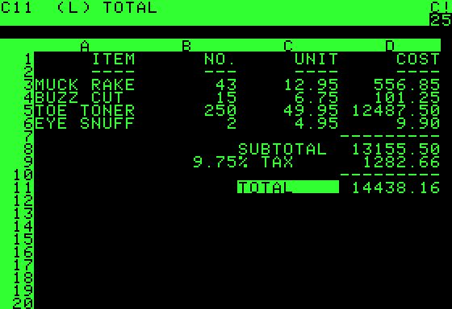

这一章在做什么
这是全书技术部分的收束，作者明说这一章比前面更有立场：不并列比较几种做法，只深入讲一种思路。思路是：一份数据只在一处写入，索引、缓存、分析表都由事件日志按同一顺序派生出来，流处理跟上新变化，批处理重算历史。作者把这看成把数据库的内部功能「拆开」放到外面，并一路延伸到用户的设备上。后半回答这样做还能不能保证正确：不用跨系统的分布式事务，靠端到端的请求 ID、按分片定序的日志和持续核查守住完整性，放松及时性。

VisiCalc 在 Apple II 上运行的截图。从数字能看出，D 列的金额是数量乘单价，下面的小计、税和合计又由上面的格子算出：改任何一个数量，下游的格子都跟着重算。作者在 §2.2 拿 1979 年的 VisiCalc 说明，这正是他们希望整个数据系统具备的能力。User:Gortu，公有领域，维基共享资源 读之前：先预测
第 11、12 章讲了批处理和流处理怎么工作；这一章把它们当作材料，回头把全书串起来：第 4 章的索引、第 6 章的复制日志和读己之写、第 8 章的事务和两阶段提交、第 10 章的共识和全序，都会在「派生数据」的眼光下重新出现一次。读的时候要分清两样东西：书里讲过的机制，和作者在这些机制之上提出的主张。第 14 章转向伦理和社会，这一章是技术部分的最后一章。
一个充值服务：数据库开了可串行化隔离，消息处理用的是有「恰好一次」语义的流处理器。用户点「充值 50 元」，服务器已经提交，回包时手机信号断了，App 提示失败，用户又点了一次。会发生什么？
不会重复：可串行化隔离保证同一笔操作只执行一次
不会重复：流处理器的恰好一次语义会认出第二次是重复的
会充两次：第二次对服务器是新请求、对数据库是新事务，除非有一个从 App 一路带到数据库的标识
不会重复：TCP 用序列号丢掉了重复的包
第二次会因为和第一次冲突，被数据库的死锁检测拒绝
一个基于事件流、异步处理的停车位预约系统里出现了三件事。甲：用户付款后马上打开预约页，头三秒显示「待支付」，之后变成「已支付」。乙：某个停车场周六上午的预约数比车位多了 2 个。丙：一笔退款在账上记了两次。按作者对「一致性」的拆法，哪几件是等一等就会自己消失的？
三件都是：异步系统最终都会一致
只有甲
甲和乙
甲和丙
都不是：三件都是要修的 bug
同一份数据要出现在数据库、搜索、缓存、分析系统里，每处一种格式。不用一个横跨所有系统的分布式事务，能不能让它们始终对得上、出了故障也不丢不重？如果能，放弃的是什么？
作者为什么说「先定一个全序」比用 CDC 还是用事件溯源更要紧？什么情况下拿不到全序？§1.1
在数据库里执行 CREATE INDEX，和用流处理器维护一个搜索索引，哪里一样？「拆开数据库」拆的是什么？§2.1
TCP 会去重，数据库有事务，流处理器有恰好一次，重复提交为什么还是拦不住？§3.1
把「一致性」拆成两半以后，哪一半可以放松，放松的代价由谁来付？§3.3
这一章的骨架
这一章分三块：§1 说为什么要派生、派生靠什么（一个全序）、它的边界在哪；§2 把派生放大成一种架构观，从数据库内部一路推到用户的设备；§3 回头算正确性的账。容易乱的是 §2 和 §3 之间：§2 讲的多是可能性和好处，§3 才回答「不用分布式事务还对不对」。读 §3 时，把它和 §1.1 里「派生数据和分布式事务」那一小节接起来读。
问题：同一份数据要出现在很多系统里
数据集成 §1
拆开数据库 §2
追求正确 §3
只写一处，其余派生 §1.1
全序：有用，也有极限 §1.1
批与流：跟上和重算 §1.2
联邦统一读，拆开统一写 §2.1
应用代码 = 派生函数 §2.2
读写路径推到终端 §2.3
端到端的请求 ID §3.1
用日志实施约束 §3.2
及时性 ≠ 完整性 §3.3
信任，但要核查 §3.4
代价：读到的不一定最新；全序有上限；多几套要运维的部件
贯穿全章（作者的主张）：一条事件日志 → 确定性的派生 → 很多视图
本站画的全章结构。两个黄色格子是这一章论证的两个转折点：§1.1 承认全序有极限，§3.3 把「一致性」拆开，后面关于正确性的说法都建立在这次拆分上。
边读边填：每行一个问题，读到答案就写一两句。只存在你这台设备的浏览器里，别人看不到。
读完了？对照我找到的
派生和事务：事务通常保证写完立刻读到新值，异步派生默认不保证；作者认为好的分布式事务协议短期内不会普及，日志派生是眼下最有希望的路。
全序的极限：吞吐超过一台主节点要分片；跨地区各有各的主；微服务各管各的状态；客户端离线时先改本地。
渐进迁移：新旧结构作为同一份数据的两个派生视图并存，用户一点点挪过去，每一步都能退回，所以敢动、改得快。
联邦和拆开：联邦只要把一种数据模型映射成另一种，不难；让多处的写保持同步才是难的工程问题。
不发请求：提前订阅汇率变化存进本地库，下单时查本地；代价是连接和时间有关，重放旧数据时要用当时的汇率。
原子性从哪来：最初那条请求写进日志是原子的，写进去之后，下游的事件迟早都会写出来（可能有重复，靠 ID 去掉）。
两种一致：违反及时性是暂时的，等一等再读就好；违反完整性是永久的，要显式地检查和修复。
分节地图
全章约 1.7 万词，建议分五次读。前两次讲架构上的主张，第三次从读写路径过渡到正确性，第四次是全章最需要慢读的地方（约束、及时性和完整性），最后一次轻松些。
第一次坐下§0–§1.2 · 约 3000 词 · 为什么要派生，派生靠什么
In Chapter 2 we discussed the…约 100 词 开篇 作者交代这一章的定位：只讲一种思路，立场比前面各章鲜明。 Data Integration约 300 词 数据集成 没有一种软件能包办所有用法，把几种拼在一起成了常态。 Combining Specialized Tools by Deriving Data约 1500 词 用派生数据组合专用工具 先定写入顺序再派生；和分布式事务比；全序拿不到时怎么保住因果。 Batch and Stream Processing约 1100 词 批处理与流处理 两者都在维护派生状态；重新处理历史数据怎样让系统渐进演化。别跳过铁路轨距的方框。 第二次坐下§2–§2.2 · 约 3700 词 · 把数据库拆开，应用围绕数据流
Unbundling Databases约 300 词 拆开数据库 Unix 和关系数据库两种信息管理哲学的对照，这一节想两头兼得。 Composing Data Storage Technologies约 1500 词 组合多种存储技术 建索引和维护派生系统有多像；联邦和拆开；什么时候不该拆。 Designing Applications Around Dataflow约 1900 词 围绕数据流设计应用 应用代码当派生函数，代码和状态分开；用汇率的例子比较同步请求和订阅。 第三次坐下§2.3–§3.1 · 约 4600 词 · 读写路径推到终端，转入正确性
Observing Derived State约 2400 词 观察派生状态 写路径和读路径的边界，一路推到客户端；读请求也可以当事件处理。 Aiming for Correctness约 500 词 追求正确 有状态的系统为什么更要讲正确，现有的事务和一致性概念哪里不够。 The End-to-End Argument for Databases约 1800 词 数据库的端到端论证 重复提交为什么每一层都拦不住；端到端论证是什么，搬到数据系统里意味着什么。 第四次坐下§3.2–§3.3 · 约 3400 词 · 约束、及时性和完整性
Enforcing Constraints约 1600 词 实施约束 唯一性为什么要共识；按值分片的日志怎么实施约束；多分片请求不用原子提交。 Timeliness and Integrity约 1800 词 及时性与完整性 把「一致性」拆成两半；哪些约束可以先违反再补偿；避免协调的系统。 第五次坐下§3.4–§4 · 约 2100 词 · 持续核查，加小结
Trust, but Verify约 1600 词 信任，但要核查 硬件和软件都会出错，怎样持续审计数据；事件日志对审计有什么帮助。 Summary约 500 词 小结 全章回顾。先自己回忆一遍再读它。
先用中文过一遍
派生数据：只写一处，其余按同一个顺序算出来
一份商品数据，可能同时活在交易库、搜索索引、缓存、数仓和推荐模型里。最直觉的做法是让应用把每一处都写一遍，叫双写。第 12 章已经看过它的毛病：两个人几乎同时改同一个商品，两处收到的先后可能相反，各自都「成功」了，结果永远对不上；还可能一处写成、一处失败。
派生的做法是只让一处接受写入，这一处叫记录系统（system of record），其余各处都从它的变更日志里按同样的顺序算出来。先后由日志一家说了算，每个下游只要按顺序、确定性地处理，就会落到同一个结果；处理到一半崩溃，从上次的位置重放，只要处理是幂等的，重放几遍都一样。这就是第 10 章的状态机复制，只不过「副本」换成了形态各异的系统。
双写：应用自己写两处
甲：改价 29
乙：改价 35
商品库
先 29 后 35 → 35
搜索索引
先 35 后 29 → 29
两个请求交错，两处收到的先后相反
两边都「成功」了，却永远对不上
派生：只写一处，其余按日志算
甲：改价 29
乙：改价 35
商品库（记录系统）
变更日志
#1 改价 29
#2 改价 35
搜索索引
缓存
数仓
都按 #1、#2 的顺序处理 → 都是 35
崩溃了就从上次的位置重放
本站画的示意图，价格是编的。左边的问题第 12 章讲过；右边成立的前提是：日志是唯一的写入口，下游处理是确定的、幂等的。
代价有两样。一是下游是异步追上来的，刚写完立刻去读派生出来的那一份，可能还是旧的；分布式事务通常保证读到新值，日志派生默认不保证。二是「一处定序」本身有上限：事件多到一台机器排不过来就得分片，分片之间没有先后；跨地区部署时各地区有各自的主；微服务各管各的状态；客户端离线时先改本地。书里有一个社交网络的例子，说明丢掉事件之间的因果顺序，会让一条通知发给不该收到的人。
派生还带来一个好处：可以重算。想换一种数据结构，不必一次性迁移，而是从同一份原始数据再派生一个新视图，新旧并存，先让少量用户走新的，没问题再逐步扩大，出了问题随时退回旧的。
英国迪德科特铁路中心（Didcot Railway Centre）保存的混合轨距线路，中间那条能看到三根钢轨，宽轨距的车和标准轨距的车可以在同一条线上跑。§1.2 的方框讲的就是这种「加第三根轨」的做法：新旧两种轨距并存，等旧车都换完再拆掉多出来的那根，和新旧两个派生视图并存是同一个思路。Rosser1954，CC BY-SA 4.0，维基共享资源
拆开数据库，和读写路径的边界
在数据库里执行 CREATE INDEX，数据库会对表拍一个一致的快照，扫一遍建出索引，再补上建索引期间新来的写，之后每次写表都顺手更新索引。把「表」换成记录系统、「索引」换成搜索服务或缓存、「顺手更新」换成变更数据捕获加流处理器，就是上一节的派生。作者由此主张：一个组织里的全部数据流，可以看成一个巨大的数据库，流处理器相当于触发器和物化视图的维护逻辑，各个派生系统相当于不同类型的索引，只是分散在不同机器上、归不同团队管。这叫拆开（unbundling）数据库。另一条路是联邦数据库（federated database）：在许多存储之上盖一层统一的查询接口。前者统一的是写，后者统一的是读。
派生出来的东西放在哪一层，决定了一次请求的工作怎么分配。数据一写进来就做的部分叫写路径，有人来读时才做的部分叫读路径，派生数据集就是两条路相遇的地方。缓存、索引、物化视图做的事情都一样：把这条边界往读的那一侧推，写的时候多做一点，读的时候省一点。推到最远，就是服务器把变化一路推送到用户设备上，作者把这看作写路径延伸到了终端用户。
例子：外卖平台列表页上的「商家平均评分」
写路径：数据一来就做
读路径：有人问才做
① 什么都不存
读：扫这家的全部评价，再求平均
② 存总分和条数
写：总分加星级，条数加一
读：做一次除法
③ 缓存商家整页
写：重算评分，把整页渲染好存起来
读：直接取
④ 推到用户手机
写：算好后经长连接推给每台在线的设备
两种颜色的交界就是派生数据集所在的位置：越往右，写时做得越多，读时越省
④ 第一次打开仍要读一次初始状态；断线后按上次读到的位置补上漏掉的变化
本站画的示意图。哪一行最好，取决于评价写入和列表被看的频率；作者的论点只是这条线可以挪，挪到哪是取舍。
端到端：去重要从发起请求的那一端做起
重试会带来重复：一次操作也许其实成功了，只是确认没传回来。底层各有各的去重办法，但各管一段。TCP 用序列号去重，只在一条连接之内有效；数据库的事务通常和一条客户端连接绑在一起；流处理器的恰好一次，管的是它自己处理消息的那一段。手机信号断在「服务器已提交、回包还没到」的那一刻，用户看到失败、再点一次，对服务器是一个新请求，对数据库是一个新事务，哪一层都认不出它是重复的。
办法是让发起请求的那一端生成一个请求 ID，一路带到数据库，在数据库里对它建唯一约束：同一个 ID 第二次插入就失败。这是 Saltzer、Reed、Clark 1984 年的论文《End-to-End Arguments in System Design》提出的端到端论证（end-to-end argument）在数据系统里的样子：有些功能只有通信两端的应用自己才能做完整、做对，底层提供的版本只能降低出事的概率。书里还把同一个论证用到校验和与加密上。
手机 App
应用服务器
数据库
充值 50，ID = r7
插入 r7；余额加 50
提交成功
回包丢了：信号断了
显示失败，用户再点一次
新连接再发：同一个 r7
插入 r7
r7 已存在：拒绝，不再加钱
没有 r7：第二次对服务器是新请求、对数据库是新事务，一共充了 100
本站画的示意图。ID 要在第一次点击时就生成，重试时复用；在服务器上每收到一次请求才生成，就又回到了原来的问题。
约束、及时性和完整性
用户名不能重复、库存不能为负，这类约束要在并发的请求里定出谁先谁后，第 10 章说过这等价于共识。放到日志里，做法是按要约束的那个值给日志分片：同一个值的请求必然落进同一个分片，一个分片由一个处理器单线程、按顺序地读，排在前面的赢。分片之间互不相干，所以可以加分片来扩展。
一个请求涉及好几个分片时，也不一定要跨分片的原子提交。下图是本站换的例子：用一张优惠券下单，券只能用一次，下单成功后要给商家入账、给用户加积分。请求先作为一条事件写进按券号分片的日志，这一步是原子的；处理器确定性地做判断，再往别的分片发出带着同一个请求 ID 的事件；崩溃重来时，它会作出同样的判断、发出同样的事件，下游按 ID 丢掉重复的。
请求 r9
用券 C5 下单
券分片的日志（按券号分）
… r3 │ r8 │ r9
券处理器（按序、单线程）
本地记：哪些券已用、见过哪些 ID
商家分片：入账 r9
商家处理器：见过 r9 就丢掉
用户分片：积分加 20，r9
积分处理器：见过 r9 就丢掉
券已用过：发「拒绝 r9」
用户在输出流上等结果
券处理器崩溃后重放 r9：同样的判断，发出同样带 r9 的事件，下游去重
原子性来自第一步：r9 写进券分片的日志，这一步要么有、要么没有
本站画的示意图，换了一个书里没有的场景。要求只有两条：每个分片的事件严格按日志顺序、至少处理一次；处理器是确定性的。
这样做的代价是，发请求的人不能马上知道结果，要在输出流上等那条消息。作者由此把平常笼统说的「一致性」拆成两件事。及时性（timeliness）：用户看到的是不是最新状态；违反了，等一会儿再看就好。完整性（integrity）：数据有没有丢、有没有算错、有没有自相矛盾；违反了，等多久也不会自己好，要有人去查、去修。事务通常两样一起给，异步的数据流可以只保完整性、放松及时性。再往前一步：如果业务本来就有道歉和补偿的流程（超卖了就退款加赔偿），连约束的检查都可以挪到事后。作者把不需要同步协调、仍保完整性的系统叫作避免协调的（coordination-avoiding）数据系统。
这一章点名的系统
Debezium 变更数据捕获 书里说它能从很多种数据库里抽取变更流。
Kafka 日志型消息代理 书里说它的协议正在成为事件流事实上的标准。
Apache Beam 流处理编程接口 书里拿它作按事件时间开窗的例子，写好的计算可以交给 Flink 或 Google Cloud Dataflow 去跑。
Trino 联邦查询引擎 书里和 PostgreSQL 的外部数据包装器（foreign data wrapper）一起，举作联邦数据库的例子。
Storm 流处理框架 书里提到它的分布式 RPC，把一次查询当作流，在很多分片上合起来算。
VisiCalc 电子表格 1979 年的电子表格软件，作者拿它说明数据流式的自动重算。
Jepsen 故障测试 Kyle Kingsbury 做的一系列实验，书里说它揭示了一些产品宣称的安全保证和故障下的实际表现差得很远。
HDFS、Amazon S3 存储系统 书里说它们不完全信任磁盘，后台不停地读回文件、和别的副本比对。
证书透明度 Certificate Transparency 用密码学校验的只追加日志和默克尔树来检查 TLS 证书，每个日志只有一个主，不需要共识协议。
英文 中文 一句话 system of record 记录系统 数据最先写进、被当作权威的那一份，其余都从它派生（§1.1）。 derived data 派生数据 由别的数据算出来、丢了可以重算的数据：索引、缓存、物化视图（§1.1）。 total order broadcast 全序广播 让所有节点按同一顺序收到同一串消息，和共识等价（§1.1）。 idempotent 幂等 执行一次和执行多次效果相同（§1.1、§3.1）。 lambda / kappa architecture λ 架构 / κ 架构 前者批和流各跑一套，后者在同一个系统里既处理新事件、也重放历史（§1.2）。 unbundling 拆开（数据库） 把数据库内部维护索引、视图的功能，用独立组件加事件日志在外面拼起来（§2.1）。 federated database 联邦数据库 在多种存储之上提供统一的查询接口，也叫 polystore（§2.1）。 write path / read path 写路径 / 读路径 数据一来就做的预先计算，和有人来读时才做的计算（§2.3）。 exactly-once semantics 恰好一次语义 出了故障要重试，最终效果也和没出故障一样（§3.1）。 end-to-end argument 端到端论证 某些功能只有通信两端的应用才能完整、正确地实现（§3.1）。 compensating transaction 补偿事务 事后纠正一次错误操作的操作，比如退掉多扣的那一笔（§3.3）。 timeliness 及时性 用户看到的是不是最新状态（§3.3）。 integrity 完整性 数据没有丢失、没有矛盾或错误（§3.3）。 coordination-avoiding 避免协调的 不做同步协调、仍能保证完整性的数据系统（§3.3）。 auditing 审计 检查数据有没有被损坏（§3.4）。
词与短语
词条按在书里出现的顺序排，按节分组；读一节之前先把这一节的过一遍，读的时候就不用停。斜体小字是原句里连续的几个词，在电子书里搜它就能找到那一句。标着「每个字都认识」的，是字面意思会把你带偏的。行话（compaction、quorum 这类）不在这里，在上面的术语表里。
§0 In Chapter 2 we discussed the…
run through
… These themes have run through all …
贯穿
不是「跑过去」，也不是「快速过一遍」：主题像一根线穿过所有章节。
opinionated
… This chapter is more opinionated than …
立场鲜明的、有主见的
软件圈常说 opinionated framework，指替你做了很多选择的框架。这里是作者提醒：后面多是主张。
§1 Data Integration
profusion
… Faced with this profusion of alternatives, …
大量、繁多
read between the lines
… help you read between the lines …
读出言外之意
厂商不会写自己不擅长什么，要从字里行间看出来。
cobble together
… end up having to cobble together several …
（勉强）拼凑起来
cobble 是补鞋，带一点「凑合」的意味。
§1.1 Combining Specialized Tools by Deriving Data
touch on
… We touched on the issue of …
（简单）提到过
barring
… consistent with it (barring bugs in …
除非有、不算……的话
介词，相当于 except for。不是「阻挡」。
in charge of
… is “in charge” of determining the …
负责、说了算
作者加了引号：两边都不是「拍板定顺序的那一个」。
funnel through
… funnel all user input through a …
（像漏斗一样）全部引到一处经过
funnel 当动词。§3.2 又出现一次，说的是所有请求都挤过一个节点。
fare
… derived data systems fare in comparison …
表现得（怎么样）
动词 fare 是「进展、表现」，how does X fare 就是「X 表现如何」，和车费无关。
absorb costs
… willing to absorb their performance and …
承受（成本）
suck it up
… suck it up and learn to …
忍着吧、认了吧
很口语，带点不客气。作者是在反对拿这种话打发所有人，又不告诉人家该怎么应对。
middle ground
… work toward a middle ground between …
折中的地带
§1.2 Batch and Stream Processing
flavor
… quite strong functional flavor (even if …
风格、味道
functional flavor 是「带有函数式编程的风格」。
contain
… to be contained locally, whereas distributed …
控制住、不让扩散
不是「包含」。疫情、火势、故障都用 contain。
undertaking
… Nevertheless, the undertaking is expensive, …
（一项）工程、事业
和殡葬业的 undertaker 无关。
the beauty of
… The beauty of such a gradual …
……的妙处
fall out of use
… and has fallen out of use. …
不再有人用
§2 Unbundling Databases
cope with
… do not cope very well with …
应付、处理得了
draw on
… query can draw on a lot …
利用、调用（现成的资源）
不是「画」。一条短查询背后能调动优化器、索引、连接算法这一大套东西。
the best of both worlds
… the best of both worlds. …
两全其美
§2.1 Composing Data Storage Technologies
elaborate
… are like elaborate implementations of triggers, …
复杂精细的
形容词读 /ɪˈlæbərət/，不是动词「详细说明」。
avenue
… there are two avenues by which …
途径、路子
disparate
… combine data from disparate places can …
各不相同的、互不相干的
two sides of the same coin
… are two sides of the same coin: …
一体两面
manifest itself
… which manifests itself in two ways: …
表现为、体现在
catch up
… The faulty consumer can catch up …
追上（落下的进度）
消费者修好以后，从日志里把积压的消息补处理完。
quirks
… configuration issues and operational quirks, …
（运维上的）怪脾气、奇怪的毛病
moving parts
… as few moving parts as possible. …
要单独运转、会出故障的部件
本义是机器里会动的零件，动的零件越多越容易坏。
lock into
… may lock you into an inflexible design. …
把你锁死在（某种设计）上
常见于 vendor lock-in（被厂商绑定）。
best off
… you’re most likely best off simply using …
（这样做）最划算、最好
be better/best off doing 是「做……更好」，不是「最好关掉」。
come into the picture
… come into the picture only when …
开始起作用、有意义
de facto
… becoming a de facto standard …
事实上的（而非正式规定的）
§2.2 Designing Applications Around Dataflow
notoriously
… feature engineering is notoriously application-specific …
出了名地（带贬义）
notorious 是坏名声，和 famous 不一样。
cookie-cutter
… a standard cookie-cutter function like …
千篇一律的、套模子的
本义是饼干模子，一压一个样。
afterthought
… somewhat of an afterthought in database …
事后才补上的东西
说触发器和存储过程不是设计时的重点，是后来加上的。
at will
… added and removed at will, …
随意地、想加就加
separation of Church and state
… the separation of Church and state”. …
政教分离（这里是双关）
Church 指 lambda 演算的发明者 Alonzo Church，state 指可变状态。紧接着的方框专门解释了这个笑话。
left out
… so that nobody feels left out. …
被落下、被冷落
renegotiate
… implies renegotiating the relationship between …
重新商定（两者的关系）
stringent
… are quite stringent demands, but …
严格的、苛刻的
§2.3 Observing Derived State
come full circle
… we have come full circle! …
绕了一圈回到起点
作者的一句自嘲：第 2 章的时间线例子讲的就是读写路径的边界。
ingrained
… is deeply ingrained in our databases, …
根深蒂固的
overkill
… is perhaps overkill. However, …
杀鸡用牛刀、做过头了
run against the limits
… applications that run against the limits …
碰到……的天花板
off-the-shelf
… conventional off-the-shelf solutions. …
现成的（买来就能用的）
本义是货架上直接拿的商品，和定制相对。
§3 Aiming for Correctness
not a big deal
… it’s not a big deal if …
没什么大不了
the tool of choice
… have been the tools of choice …
首选的工具
witness
… seem: witness, for example, the …
看看……就知道了
句首的祈使用法，引出证据。不是「目击证人」。
flaky
… methods are surprisingly flaky. …
不靠谱的、时好时坏的
程序员熟悉的 flaky test 就是这个词。
get away with
… might be able to get away …
（侥幸）蒙混过关
cross your fingers
… simply crossing your fingers and hoping …
祈祷好运
交叉手指是祈求好运的手势。作者在反讽：这算不上工程方法。
not the last word
… it is not the last word …
不是定论、不是终极答案
§3.1 The End-to-End Argument for Databases
cure-all
… it is not a cure-all …
万灵药
mangled
… would often get mangled if …
被弄乱、被搅坏
that is a shame
… That is a shame, because …
真可惜
shame 在这里不是「羞耻」。
wrap up
… to wrap up the high-level fault-tolerance …
封装起来
不是「收尾、结束」：把高层的容错机制包进一个抽象，应用就不用操心。
collapse
… collapse them down to two possible …
（把很多情况）归并、压缩成
不是「倒塌」。事务把各种故障收拢成提交或中止两种结果。
§3.2 Enforcing Constraints
tackle
… like Raft tackle the problem of …
着手解决（难题）
rule out
… replication is ruled out, because …
排除（不可行）
more interesting
… becomes more interesting when several shards …
更麻烦、更难
技术写作里的委婉说法：interesting 常常是「棘手」的意思，要反着读。
§3.3 Timeliness and Integrity
conflate
… term consistency conflates two requirements …
（把不同的东西）混为一谈
settle
… banks reconcile and settle transactions asynchronously, …
结算
reconcile 是对账，settle 是最终清算，都是金融行话，不是「和解」「定居」。
inconsequential
… is fairly inconsequential. …
无关紧要的
complimentary
… providing a complimentary room at …
免费赠送的
和 complementary（互补的）只差一个字母，也不是「赞美的」。
fix up
… fix it up later by apologizing. …
（事后）补救、修好
after the fact
… check the constraint after the fact. …
事后
patch up
… you can patch up the problem …
（临时）弥补、修补
sweet spot
… the sweet spot with neither too …
最佳平衡点
本义是球拍、球棒上击球效果最好的那一点。
§3.4 Trust, but Verify
battle-tested
… have been battle-tested by many people …
久经考验的
creep in
… bugs still creep in. …
（不知不觉地）混进来
anywhere near
… receive anywhere near the amount of …
（用在否定句里）远远不及
don’t receive anywhere near X 是「连 X 的零头都没有」。
live up to
… not always living up to our …
达到（期望、标准）
sooner rather than later
… find out sooner rather than later. …
越早越好
make provision for
… make no provision for the possibility …
为……预先做准备
tamper-proof
… can be made tamper-proof by …
防篡改的
到这里先停下，去读原书 下面是读完再看的：你的预测对不对、几道换成你来选的判断题、值得细读的句子和理解检查。先看了，读书时就只是在找答案。
读完：回到你的预测
书里的答案是第三项（§3.1）。TCP 的去重只在一条连接里有效；数据库的事务通常绑在一条客户端连接上；流处理器的恰好一次只管它处理消息的那一段。用户重点一次，走的是新连接、新请求、新事务，每一层看到的都是「第一次」。书里的办法是在客户端生成一个请求 ID，一路传到数据库，靠唯一约束挡住第二次。这正是端到端论证：底层的可靠性机制有用，但不够。想一想：如果 App 正确地复用了 ID，可服务器在写数据库之前先调了一个不认识这个 ID 的第三方支付接口，还安全吗？
书里的答案是第二项（§3.3）。甲是及时性问题：异步处理还没跟上，等一等再看就对了。丙是完整性被破坏：退款生效了两次，等多久也不会自己变对，要显式地查出来再修。乙最容易判错：它不是「等等就好」，但也不一定是事故。书里说很多业务本来就允许先违反约束、事后用补偿事务道歉和赔偿，前提是完整性始终守住（每一笔预约都有记录、钱没有凭空消失）。想一想：如果甲里的「待支付」持续了一整天，你还会把它归为及时性问题吗？
判断题：换成你来选
场景都是本站编的。先选，再看解释；解释里写了对应的节号，拿不准就回原书看那一节。
怎么修最划算？§1.1
场景：一个网店，商品存在关系数据库里，搜索用一个单独的搜索引擎。下单服务改价时先写数据库、再写搜索。偶尔有商品在搜索结果里的价格和详情页不一样，而且一直不会自己变对。
给写搜索的那一步加上失败重试 把两次写放进一个跨两个系统的 XA 事务 搜索只从数据库的变更流（CDC）按顺序更新，应用不再直接写搜索 每天夜里全量重建一次搜索索引
「不会自己变对」说明两边看到的写入顺序不同，或者一边写失败了，这是双写的典型问题。让数据库做唯一的写入口，搜索按变更日志的顺序派生，两处的先后就由同一个日志决定。重试只解决「一处失败」，解决不了并发时的顺序；XA 能保证原子性，但书里说它的容错和性能都差；夜里重建能兜底，但白天最长有一整天的不一致。
下单服务该怎么拿运费规则？§2.2
场景：每次下单，下单服务都同步调用一个「运费规则服务」查当前的运费。运费规则一天改几次。上周运费服务宕了二十分钟，这二十分钟里所有下单全部失败。
给运费服务多加几个副本，前面放负载均衡 下单服务提前订阅运费规则的变更流，存进本地库，下单时查本地 用两阶段提交，把查运费和写订单放进一个事务 把运费规则写死在下单服务的配置文件里，改了就重新发布
这就是书里汇率例子的同一个结构：用订阅加本地副本，替掉一次同步的网络请求，运费服务短暂宕机时下单照常进行，只是规则可能晚到一会儿。加副本能降低宕机的概率，但每单仍多一次网络往返；查询不改数据，两阶段提交无从谈起；写死在配置里，每次改规则都要发版。要记住新麻烦：将来重算历史订单时，要用下单当时的规则，而不是现在的。
哪一种检查本来能更早发现问题？§3.1 §3.4
场景：一个网盘服务，上传走 TLS，对象存储给每一块数据都存了校验和，磁盘做了 RAID。还是有用户报告，少数文件下载回来和上传时不一样。最后查出来，是一次上线的分块合并代码有 bug。
把 TLS 换成更强的加密套件 RAID 再多加一块校验盘 让对象存储更频繁地在后台读回数据、比对校验和 客户端上传时算整个文件的哈希一路存下来，下载后在客户端重算比对
TLS、存储校验和、RAID 各自只保护自己那一段。bug 在应用的合并代码里，写进存储的已经是错的数据，存储层为错数据算出的校验和照样「正确」，后台怎么比对也比对不出来。端到端的哈希把整条路径，包括应用自己的代码，都包进了检查，这是书里端到端论证用在完整性检查上的样子。
跨地区的接单系统怎么设计？§3.2 §3.3
场景：一个连锁餐厅的点餐平台，每家店每个半小时最多接 80 单，系统部署在三个地区。业务方说：偶尔多接几单可以接受，后厨加个班、给等得久的顾客发张代金券就行，反正设备出故障时本来就有这套道歉流程；但绝对不能出现付了钱却没有订单记录，也不能一笔钱扣两次。
各地区就近接单，请求先写成带请求 ID 的事件，再异步核对名额；超出的走补偿 所有地区的请求都同步发到一个全球主库，先占名额再付款 用 XA 事务把三个地区的名额表一起提交 各地区各自接单，不带请求 ID，月底统一对账
业务方的要求正好是书里的区分：名额约束可以事后检查、用补偿流程修，及时性可以放松；付款不能丢、不能重，完整性必须守住，靠请求 ID 去重和不可变的事件。全球主库能严格守住名额，但每一单都要跨地区往返，那个地区一出问题就全停；XA 跨地区更慢、更脆；不带请求 ID，完整性就没有保障，月底才发现重复扣款已经太晚。
发现余额算错以后，第一步怎么做？§3.4
场景：一个会员积分系统，所有积分变动都先写成不可变的事件，余额表由一个流处理任务从事件派生。上周的一次部署里，派生代码有一个 bug，现在怀疑一部分用户的余额算错了，但不知道是哪些。
数据库是 ACID 的，余额不会错，先去查前端的显示逻辑 用上周部署之前的备份覆盖余额表 修好派生代码，从事件日志重新算一遍余额，和现在的表逐个比对 找出来投诉的那几个用户，手工改他们的余额
派生是确定性的，事件又没有被改过，用修好的代码重跑一遍就能得到正确结果，和现表一比，就知道哪些用户受了影响。这正是书里说事件日志让审计和恢复更容易的地方。ACID 管不住应用代码本身的 bug；用备份覆盖会丢掉上周以来的正确变动；只改投诉的用户，没投诉的错账还留着。
和本站其他书对照
端到端论证 OSTEP 第 48 章 那一章用「两台机器之间可靠地传一个文件」讲同一个论证：网络协议把每个字节都确认了，文件还可能在发送方内存里或写盘时坏掉，只有传完后两端比对校验和才算数。这一章 §3.1 把它搬到了重复请求上。
去那一页 → 校验和与擦洗 OSTEP 第 45 章 §3.4 说 HDFS、S3 后台不停地读回文件、和别的副本比对。OSTEP 那一章讲的是磁盘这一层的同一件事：静默的块损坏、校验和放在哪、定期擦洗（scrubbing），以及校验和查不出的错位写入和丢失写入。
去那一页 →
值得停下来的句子
The fastest and most reliable network request is no network request at all!— §2.2。本站译：最快、最可靠的网络请求，就是根本不发请求！
这句话是汇率例子的落点，也是整个「围绕数据流设计」的卖点：与其用到时再去问，不如提前订阅变化、在本地备好。值得停下来，是因为它省掉的那次请求并没有凭空消失，而是换成了一份要保持新鲜的本地副本，以及作者紧接着承认的时间相关的连接问题。读这一章的主张时，都可以这样问一句：省下的东西换到哪里去了。
Violations of timeliness can be annoying and confusing, but violations of integrity can be catastrophic.— §3.3。本站译：违反及时性会让人烦恼、困惑，违反完整性则可能是灾难。
后半章的论证都压在这句话上。只要接受「完整性比及时性要紧得多」，异步的数据流就有了站得住的理由：它放弃的是及时性，守住的是完整性。反过来，如果你的业务里有一个约束必须当场判定、事后补不回来（比如钱已经从取款机里吐出去了），这句话就提醒你，那一处还得付同步协调的代价。
检查一下理解
1.（§1.1）应用同时写数据库和搜索索引，为什么可能永久不一致，而不只是暂时落后？ 两个并发的写到达两处的先后可能相反，两边都执行成功，最终值却不同；没有哪一方负责定顺序，也就没有谁会发现并纠正。派生的做法让一个日志定顺序，所有下游按同一顺序处理。
2.（§1.1）全序的日志在哪几种情况下难以做到？ 事件吞吐超过一台主节点，只能分片；多地区部署，各地区有各自的主；微服务各自持有状态；客户端离线时先在本地改。这些情况下，不同来源的事件之间没有确定的先后。
3.（§1.2）用派生视图做结构迁移，为什么比一次性切换安全？ 新旧结构是同一份底层数据的两个视图，可以并存；先把少量用户挪到新视图，逐步扩大，最后再删旧的。每一步都能退回，不可逆的风险小了，改起来就敢快。
4.（§2.1）在数据库里建索引的过程，和哪两件事很像？ 和给数据库加一个新的从库很像，也和在流系统里启动 CDC（先做初始快照、再跟上变更）很像：都是先处理一份一致的快照，再补上之后的变更，然后持续跟着更新。
5.（§2.1）作者说什么时候不该走「拆开」这条路？ 如果一种现成的产品已经能满足全部需求，直接用它更好。拆开追求的是覆盖更多种负载（广度），不是在单一负载上胜过专门的数据库；多一个部件就多一份学习和运维成本，为用不到的规模做设计是过早优化。
6.（§2.3）把读请求也当作事件送进流处理器，有什么用，代价是什么？ 读和写在同一个算子里相遇，相当于读请求流和数据做连接，可以借流处理器的路由和分片做跨分片的复杂查询；记下读事件还能还原用户做决定前看到了什么。代价是额外的存储和 I/O。
7.（§3.2）用日志实施用户名唯一，分几步？它为什么能扩展？ 每个申请写成一条消息，按用户名的哈希进分片；处理器顺序读，查本地记录，名字没被占就记下并发成功，否则发拒绝；申请人在输出流上等结果。同一个名字只会落在一个分片，分片之间互不相干，所以加分片就能提高吞吐。
8.（§3.4）作者说的「信任，但要核查」，在系统里具体指什么？ 不假设硬件和软件永远正确，而是持续地检查数据：把文件读回来和副本比对，定期试着从备份恢复，用事件日志和确定性的派生重算一遍结果对照。检查做得越端到端，路径上没被覆盖的环节就越少。
用一句话说这一章（写给一个没读过的朋友）：
精彩回顾
一句话： 只写一处、其余按日志派生；不靠分布式事务，靠端到端的 ID 和持续核查守住完整性。
谁来定顺序 数据库和搜索索引各自接收写入，就没有谁说了算。让一个日志定下全序，下游按同一顺序派生，就不会各走各的。
§1.1 第三根钢轨 铁路换轨距时先加一根轨，让两种车并行，旧车淘汰完再拆。数据结构的迁移也可以新旧两个视图并存，一点点挪。
§1.2 数据库外面的 CREATE INDEX 流处理器维护搜索索引、缓存，做的就是数据库建索引、维护物化视图的事，只是挪到了外面、跨了团队。
§2.1 最快的请求不发请求 提前订阅变化存在本地，替掉一次同步调用；代价是要处理时间相关的连接。
§2.2 边界可以挪 缓存、索引、物化视图都在挪写路径和读路径的分界线；推到最远，就是把变化一路推到用户屏幕上。
§2.3 重点一次就是新请求 TCP、事务、恰好一次都只管自己那一段。去重的 ID 要从客户端一路带到数据库。
§3.1 先卖了再道歉 超卖、超订、透支，很多业务本来就有补偿流程。完整性必须守住，约束的检查可以事后做。
§3.3